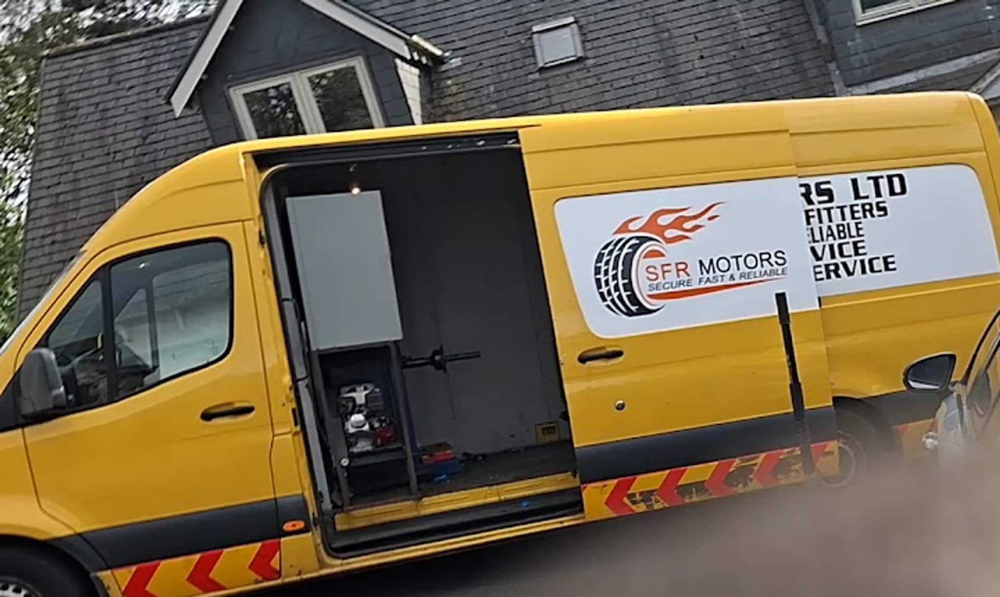
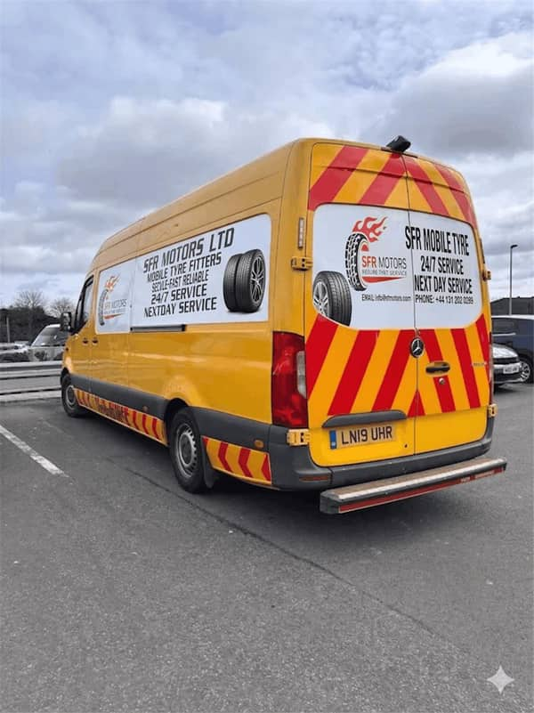

Mobile Van Tyre Replacement
Professional van tyre replacement at your home, workplace or roadside location.

Convenient Replacement For Your Van
A van off the road is a van not earning. SFR Motors Ltd provides mobile tyre replacement for vans and commercial vehicles, matching the correct load-rated tyre to your vehicle and fitting it wherever it's parked — at home, at your workplace, or at the roadside. No need to build a garage visit into your working day; our fully equipped vans bring the replacement to you.
Get A Free QuoteSigns It's Time For A New Tyre
Worn Tread
Tread depth close to or below the legal minimum.
Damaged Tyre
Sidewall bulges, cuts or other visible damage.
Puncture Damage
A puncture beyond safe, industry-standard repair.
Unsafe Tyre
Anything your fitter judges unsafe to keep driving on.
Getting Your Van Back On The Road
-
Contact Us
Call, WhatsApp or send a quote request.
-
Choose Your Tyre
Tell us your size and preferred brand.
-
We Come To You
Our fitter arrives wherever your van is parked.
-
Professional Fitting
Your replacement tyre is fitted and checked.
Van Tyre Replacement Done Right
Mobile Convenience
We come to your home, workplace or job site.
Professional Equipment
Fully equipped vans, the same standard as a workshop.
Reliable Service
Correctly rated tyres, fitted to a professional standard.
Flexible Support
One-off callouts or ongoing cover, around your schedule.
Van Tyre Replacement Near You
We provide mobile van tyre replacement across Edinburgh, West Lothian, Livingston, Falkirk, Bathgate and the surrounding areas.
See all areas we coverVan Tyre Replacement Questions
Do vans need different tyres to cars?
Yes, generally. Vans carry heavier loads, so they need tyres with a higher load rating than an equivalent car tyre. We'll match the correct rated tyre to your van when we fit it.
Can you replace van tyres while I'm working?
Yes — that's the point of the mobile service. We come to wherever your van is parked, whether that's a job site, your workplace, or at home, so you don't need to break off work to visit a garage.
Can you replace tyres on a single van or a small fleet?
Both. Whether it's one van or several, get in touch with your vehicle details and we'll arrange the right support.
How do I know what size tyre my van needs?
The size is printed on the sidewall of your current tyre. If you're not sure how to read it, just describe your van's make and model when you get in touch and we can confirm the correct size.
How quickly can you replace a van tyre?
It depends on tyre availability for your size and how busy we are, but most replacements are completed within the same visit. Get in touch and we'll confirm the earliest we can get to you.
Need A Van Tyre Replaced?
Tell us your tyre size and location — we'll get back to you with a price and an arrival time.
Get A Free Quote